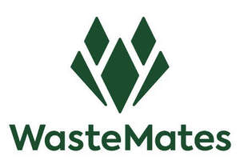

Trade Mark Journal No.2025/034 22 August 2025
UK00004248095 12 August 2025 (6,7,9,21)

- Class 6
- Materials of metal for the building industry; Metal containers for storage and transport; Buildings, transportable, of metal; Containers and boxes of metal for storage, transport and packaging; Containers of metal [storage, transport], Including waste containers; Waste bins [skips] of metal for industrial use; Closures of metal for containers; Underground and above-ground paper recycling bins, waste bins, paper collection containers, glass collection containers and waste containers of metal; Parts for the aforesaid goods, included in this class.
- Class 7
- Waste management and recycling machines; Waste grinders and waste presses [electric waste disposal units]; Apparatus and machines for transport, separation, treatment and conversion of waste; Electric garbage disposal machines; Waste compacting machines; Waste masticators and compressors [electric waste disposal units]; Waste extraction machines; Waste disposal machines for household use; Waste sorting machines; Parts of the aforesaid goods included in this class.
- Class 9
- Apparatus and instruments for conducting, switching, transforming, accumulating, regulating or controlling electricity; Solar panels for the production of electricity; Built-in solar panels, including for in dustbins; Parts for the aforesaid goods, included in this class; Data-processing equipment and computers; Software; Computer software for use in dustbins; Software for dustbins to check whether the dustbins are full; Mobile apps, including mobile apps for dustbins.
- Class 21
- Household or kitchen utensils and containers; Cleaning articles; Dustbins, refuse containers, garbage pails, rubbish containers, waste paper baskets; Litter baskets of metal; Plastic bins.
WasteMates Holding B.V.
Representative: Maguire Boss